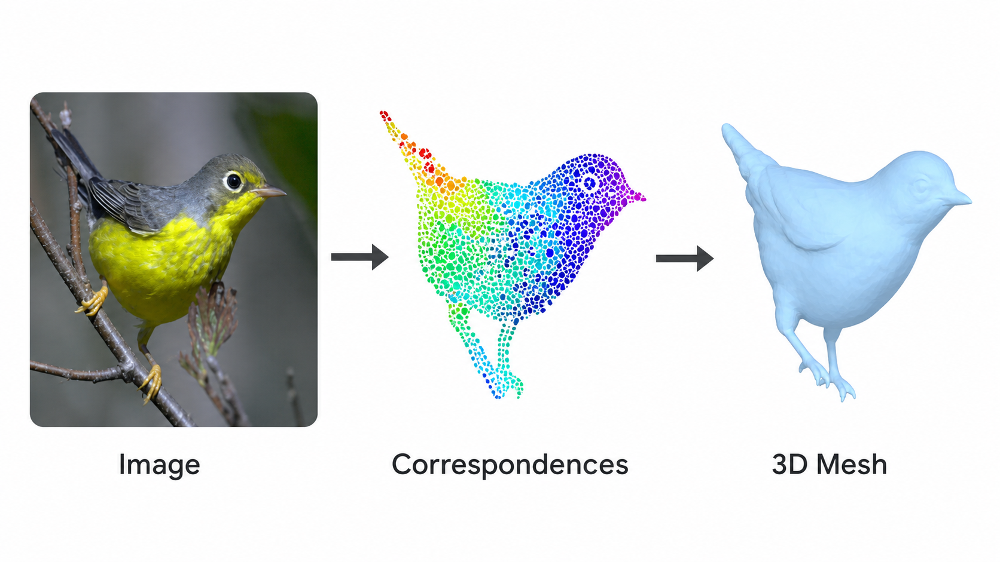
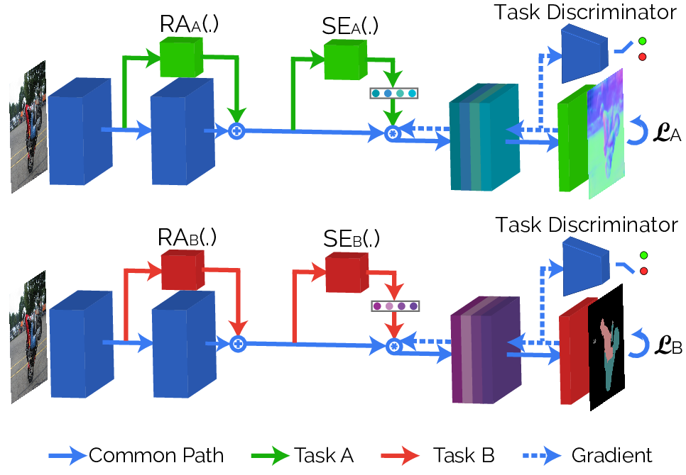
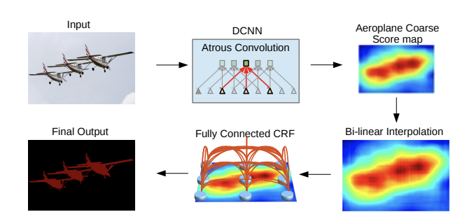

News
- September 2026. I will join Imperial College London to work on Human-Centric Physical Intelligence. I am recruiting PhD students interested in visual and embodied AI. Learn about PhD opportunities.
About
I am an Associate Professor of Computer Science at University College London, and will join Imperial College London in September to work on Human-Centric Physical Intelligence. My research focuses on building visual and embodied AI systems that understand people, reason about 3D structure, motion, and the physical world.
I also have a long-standing interest in taking research into real-world systems. From 2016 to 2018 I was a Research Scientist at Facebook AI Research (FAIR). From 2018 to 2020 I was co-founder and CEO of Ariel AI, a startup for real-time full-body 3D reconstruction for augmented reality that was acquired by Snap in 2020. From 2020 to 2024 I led the Human3D team at Snap, helping deliver full-body AR experiences to Snapchat users.
Before joining UCL in 2016, I spent eight years on the faculty of the Applied Mathematics Department at École Centrale Paris. I received my Dipl. Eng. and PhD in Electrical and Computer Engineering from NTUA, followed by a postdoc at UCLA.
Selected Works
StyleMorph: Disentangled 3D-Aware Image Synthesis with a 3D Morphable StyleGAN
ICLR, 2023

To The Point: Correspondence-driven Monocular 3D Category Reconstruction
NeurIPS, 2021
Learning Monocular 3D Reconstruction of Articulated Categories from Motion
CVPR, 2021





Students
Current PhD Students
- Edward Bartrum - UCL and The Alan Turing Institute
Graduated PhD Students
- Eric Tuan Le - 2024, Anthropic
- Eleni Chiou - 2024, GSK
- Filippos Kokkinos - 2022, Meta
- Zbigniew Wojna - 2019, Two Sigma
- Riza Alp Guler - 2018, Imperial College London
- Siddhartha Chandra - 2018, Amazon
- Stefan Kinauer - 2018
- Stavros Tsogkas - 2015, Samsung AI
- Haithem Boussaid - 2014, Philips
Former Co-Supervised Students and Interns
- Eduard Trulls - Research Scientist, Google Zurich
- Pierre-Andre Savalle - Cisco
- Michalis Raptis - Google DeepMind
- Olivier Teboul - Co-founder and CTO, Gradium
- Grigorios Chrysos - Assistant Professor, University of Wisconsin-Madison
- Adam Harley - Research Scientist, Meta
- Ishan Misra - Director and Research Scientist, Meta
- Kevis-Kokitsi Maninis - Research Scientist, Google DeepMind
- Ramakrishna Vedantam - Senior Director, Flagship Pioneering